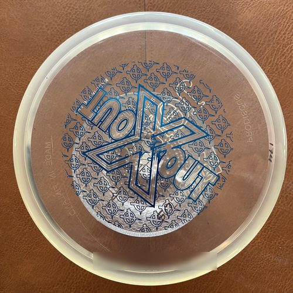
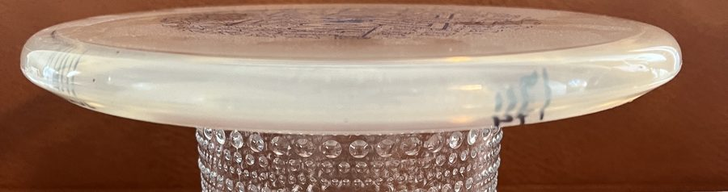
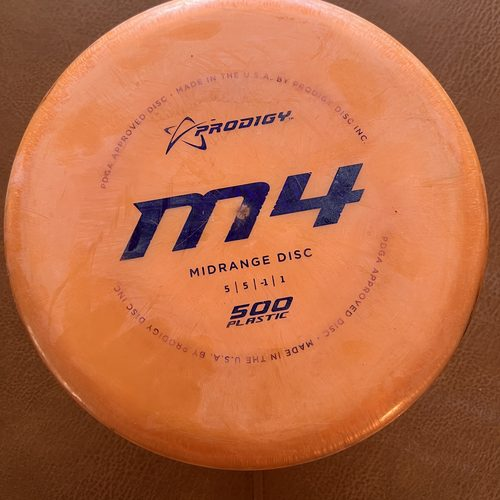
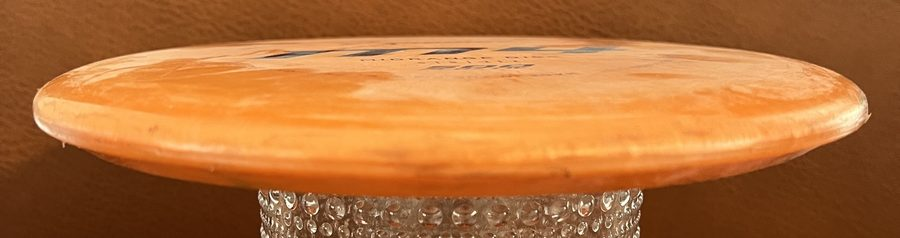
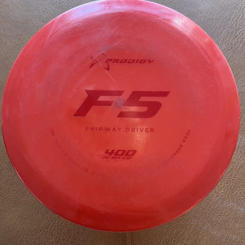
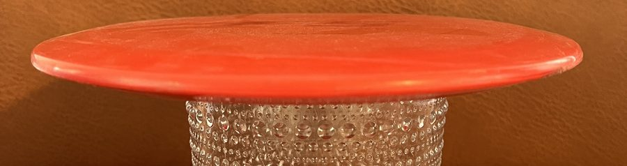
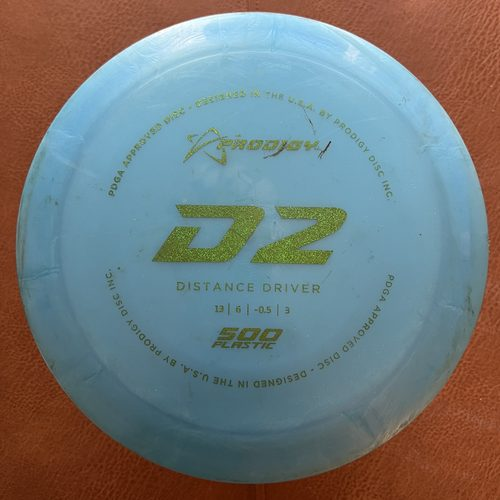
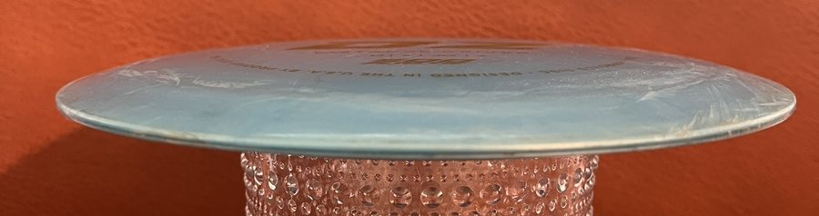

Putteri
Hidas ja tylppäreunainen kiekko, joka lentää suoraan ja tarttuu hyvin koriin. Käytetään puttaamiseen ja lyhyisiin lähestymisiin.
Frisbeegolfkiekot jaetaan käyttötarkoituksen mukaan neljään päätyyppiin. Aloittelija pärjää hyvin yhdellä putterilla, midarilla ja väylädraiverilla.
Hidas ja tylppäreunainen kiekko, joka lentää suoraan ja tarttuu hyvin koriin. Käytetään puttaamiseen ja lyhyisiin lähestymisiin.
Keskimatkan kiekko, joka on helppo heittää suoraan. Sopii lähestymisiin ja lyhyille väylille, ja on aloittelijalle hyvä ensimmäinen avauskiekko.
Nopeampi kiekko, jolla saa lisää pituutta mutta joka on vielä hallittava. Hyvä valinta kapeille metsäväylille.
Terävin ja nopein kiekko pitkiin avauksiin. Vaatii paljon heittovoimaa, joten aloittelijalle se on usein liian vaikea.
Useimpiin kiekkoihin on painettu neljä lentonumeroa, jotka kuvaavat kiekon lentoa:


Hidas ja tylppäreunainen kiekko, joka lentää suoraan ja tarttuu hyvin koriin. Putteria käytetään puttaamiseen ja lyhyisiin lähestymisiin, mutta sillä voi heittää myös lyhyitä avauksia. Moni pelaaja pitää bägissään kahta samanlaista putteria: toinen puttaamiseen ja toinen heittoihin.
Putterissa on kapea rimmi ja paksu, pyöreä reuna, joten se on tylppä ja helppo ottaa kunnolla kiinni. Kiekko on korkea ja syvä, minkä ansiosta se lentää hitaasti ja suoraan ja pysähtyy koriin ketjuihin osuessaan.


Keskimatkan kiekko, joka on helppo heittää suoraan ja tarkasti. Midari sopii lähestymisiin ja lyhyille väylille, ja se on aloittelijalle hyvä ensimmäinen avauskiekko, koska se antaa anteeksi epätarkan heiton.
Midarin rimmi on keskileveä ja reuna pyöristetty, joten se on putteria terävämpi mutta selvästi draivereita tylpämpi. Yläpinta on melko tasainen, ja kiekko lentää suoraan ja hallitusti ilman suurta nopeutta.


Nopeampi kiekko, jolla saa lisää pituutta mutta joka on vielä hallittava. Väylädraiveri on hyvä valinta kapeille metsäväylille, joilla tarkkuus on tärkeämpää kuin maksimipituus.
Väylädraiverissa rimmi on leveämpi ja reuna terävämpi kuin midarissa, ja kiekko on matalampi. Muoto leikkaa ilmaa paremmin, joten pituutta tulee enemmän, mutta heittoon ei tarvita yhtä paljon voimaa kuin pituusdraiverilla.


Terävin ja nopein kiekko pitkiin avauksiin avoimilla väylillä. Pituusdraiveri vaatii paljon heittovoimaa toimiakseen oikein, joten aloittelijalle se on usein liian vaikea ja kaartaa heti vasemmalle.
Pituusdraiverissa on leveä rimmi ja ohut, terävä reuna, ja kiekko on matala ja litteä. Muoto on tehty mahdollisimman pieneen ilmanvastukseen, mutta se toimii oikein vasta kovalla heittonopeudella.